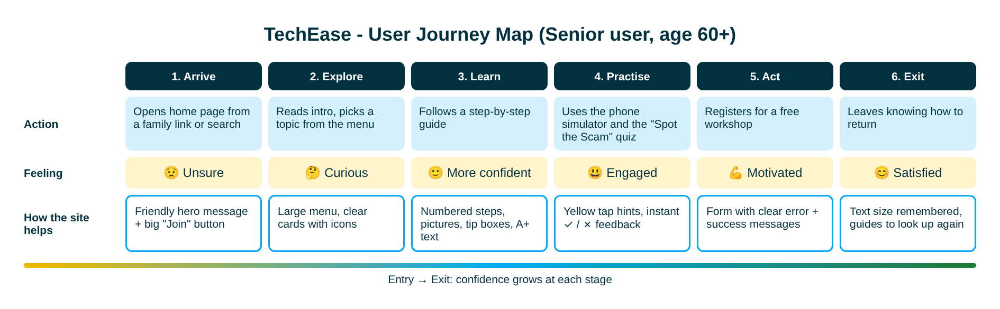
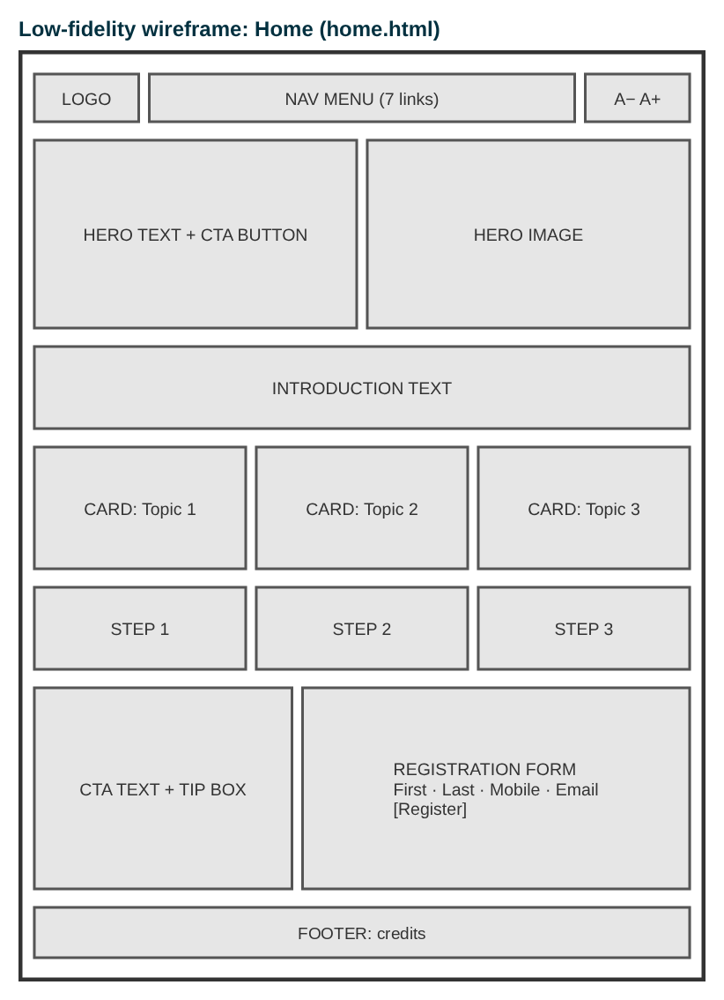
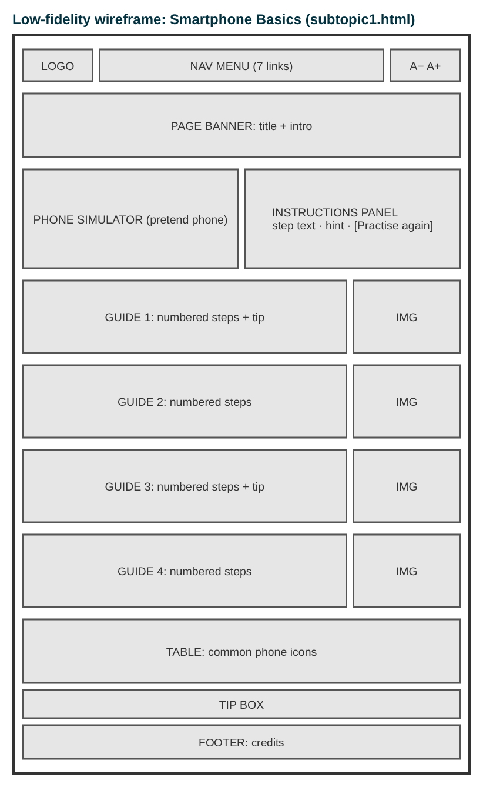
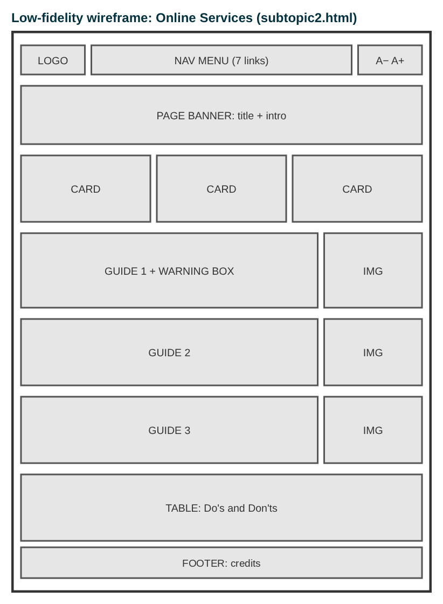
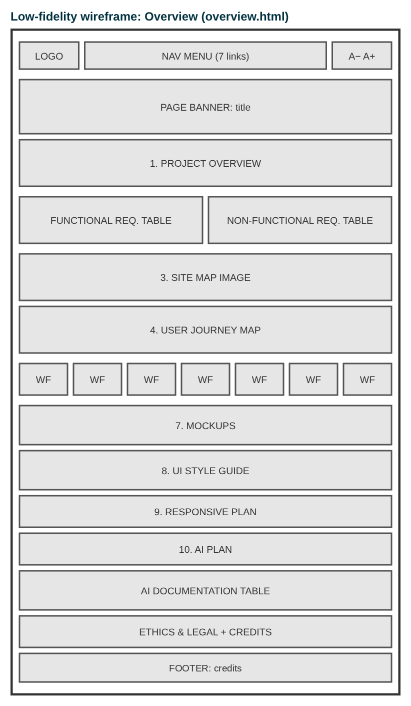
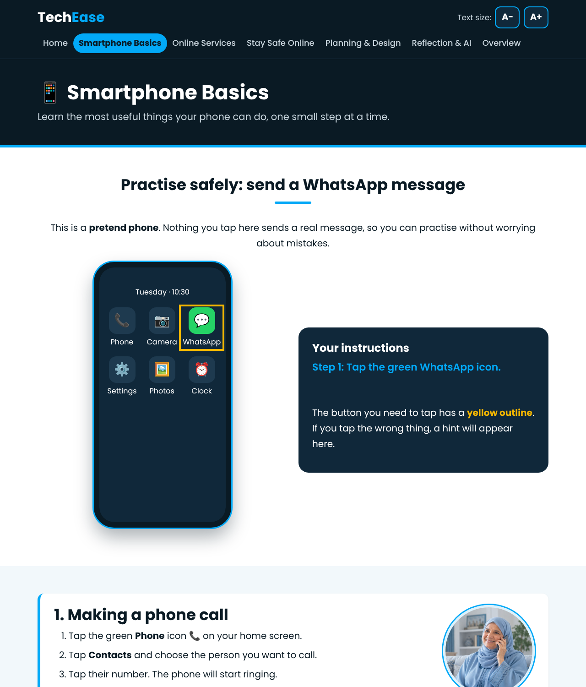
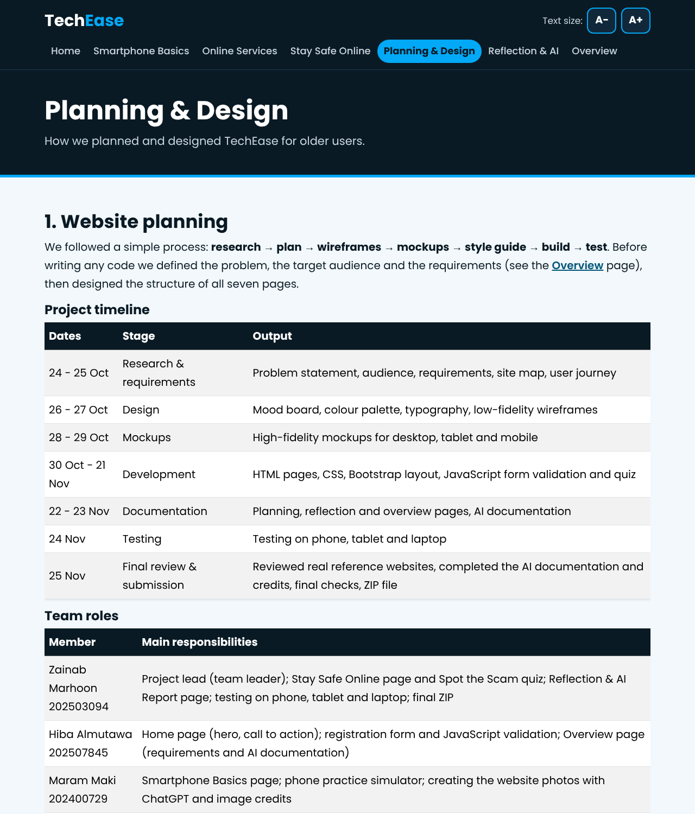

1. Project overview
| Website title | TechEase: Technology Made Easy |
|---|---|
| Website category | Educational website |
| Problem statement | Many elderly people in Bahrain struggle to use smartphones and online services. As government services, banking and healthcare appointments move online, seniors without digital skills risk being left behind, depending on others for simple tasks, or falling victim to online scams. Most online guides are written for young, experienced users, with small text, technical words and complex layouts. |
| Target audience | Primary: adults aged 60+ with little or no digital experience. Secondary: family members and caregivers who help them. |
| Project objectives |
|
2. Requirement analysis
Functional requirements
| ID | Requirement | Where |
|---|---|---|
| FR1 | User registration: register for a free workshop with first name, last name, mobile number and email. | Home |
| FR2 | Form validation: names at least 3 characters, mobile exactly 8 digits, valid email format, with clear success and error messages. | Home |
| FR3 | Navigation system: the same menu on all 7 pages, with the current page highlighted. | All pages |
| FR4 | Interactive features: a phone practice simulator, A− / A+ text-size buttons (saved with localStorage) and a "Spot the Scam" quiz with instant feedback. | Smartphone Basics / All pages / Stay Safe Online |
| FR5 | Call-to-action: "Join a free workshop" button linking to the registration form. | Home, Stay Safe Online |
Non-functional requirements
| ID | Type | Requirement |
|---|---|---|
| NFR1 | Accessibility | Main text 20px, WCAG contrast of at least 4.5:1, alt text on all images, large buttons, messages that do not rely on colour alone. |
| NFR2 | Usability | Simple language, no jargon, short numbered steps, every page one click away. |
| NFR3 | Responsiveness | Works on desktop, tablet and mobile using the Bootstrap 5 grid. |
| NFR4 | Performance | Optimised images and one shared CSS and JS file so pages load quickly. |
| NFR5 | Security | All form input is checked before it is accepted; no personal data is stored or shared with third parties. |
3. Site map

Flat structure: Home links to all six pages, and the navigation bar links every page to every other page.
4. User journey map

How a senior user moves through the website from entry to exit.
5. Design plan
Our design plan follows research → plan → wireframes → mockups → style guide → build → test. Full design decisions and the mood board are on the Planning & Design page.
6. Low-fidelity wireframes (all seven pages)

Home

Smartphone Basics

Online Services

Stay Safe Online

Planning & Design

Reflection & AI Report

Overview
7. High-fidelity mockups
Our first mockups were made before coding. We later replaced them with screenshots of our finished pages, so they match the final design.

Desktop (1280px): hero text and image side by side, 3 cards in a row

Tablet (768px): 2 cards in a row

Mobile (390px): one column, buttons stacked

Smartphone Basics (desktop): page banner and the phone practice simulator

Planning & Design (desktop): documentation layout with tables
8. UI style guide
Colour palette
Primary #02A9F7 · Secondary #0A1A24 · Accent #F5B700
#02A9F7
Buttons, highlights
#0A1A24
Nav, hero, footer
#F5B700
Warnings, tap hints
#10283A
Dark cards
#02577A
Links on light areas
#F2F8FB
Reading sections
Typography
| Use | Font | Sizes | Why |
|---|---|---|---|
| Headings | Poppins Bold (700) | H1 44px (54px on the home page) · H2 34px · H3 24px | Modern, round letter shapes that look friendly and professional |
| Body text | Poppins Regular (400) / SemiBold (600) | 20px (never below 17px; the small labels inside the pretend phone are 16px), line height 1.7 | Wide, open letters and extra line spacing make long text easier to read for older eyes |
Components
Buttons
Register now →Bright blue with dark navy text (contrast 6.8:1), pill shape, at least 52px tall so they are easy to tap.
Cards
Card title
White box, blue top border, 16px rounded corners, soft shadow and an icon in a light-blue circle.
Navigation bar
Dark navy bar with the logo, large 18px links and an A− / A+ text-size control. The current page is shown as a bright-blue "pill". On small screens the links wrap onto extra lines.
Forms & messages
White form, labels above fields, 50px tall inputs with a dark grey border, and a blue outline on the field you are typing in.
⚠ Example error message (red text + icon + words)9. Responsive design plan
| Device | Screen width | Layout |
|---|---|---|
| Desktop | 992px and wider | Hero text and image side by side; cards 3 per row; full navigation bar. |
| Tablet | 768px - 991px | Hero stacks (text, then image); cards 2 per row; simulator phone above its instructions; menu wraps onto two lines. |
| Mobile | below 768px | Everything in one column; menu links wrap; main text stays 20px. |
This is done with Bootstrap classes such as col-lg-4 col-md-6 col-12 and img-fluid
for responsive images. See the mockups above for each screen size.
Maintainability and repeat use
How the site is built to be easy to update
| What we did | Why it helps future developers |
|---|---|
One external stylesheet (css/style.css) linked in the head of every page, with no inline styles | Changing a colour or font in one place updates all seven pages. |
One external JavaScript file (js/script.js) linked in the head of every page | All functions are in one file, split into numbered, commented sections, so they are easy to find and fix. |
Clear folder structure: css/, js/, images/ | Anyone can see where each type of file belongs. |
Meaningful file names, ids and class names (e.g. subtopic1.html, firstNameError, section-dark) | The code explains itself, so a new developer understands it faster. |
| Comments marking each section in the HTML, CSS and JavaScript | Sections can be found, moved or removed without breaking the rest of the page. |
| The same page template (nav bar, banner, sections, footer) on every page | A new guide page can be added by copying an existing page and changing its content. |
| Bootstrap 5 loaded from a CDN | The framework can be upgraded by changing one version number. |
How the site encourages users to come back
- Text size is remembered: the A− / A+ choice is saved with localStorage, so returning users see the site the way they like it.
- Practice they can repeat: the phone simulator has a "Practise again" button, and the Spot the Scam quiz can be retried as many times as needed.
- Free weekly workshops: the registration form links online learning to real, repeated meetings with a trainer.
- Reference guides: the step-by-step guides and the "What to do if you are scammed" section are useful to look up again when a real situation happens.
- Family can share it: simple pages that relatives and caregivers can send to the older people they help.
10. AI utilisation plan
| AI tool | Purpose of usage | Expected outcome |
|---|---|---|
| Claude | Planning, requirements, style guide, content drafting, code help and explanations | A clear plan and working, well-structured code that we understand |
| ChatGPT | Creating images, learning Bootstrap, CSS and JavaScript techniques that were not taught in our course, researching accessibility and privacy, and drafting scam-awareness content | Realistic photos that suit our audience, example code we can understand and adapt, and a first draft of simple safety tips |
| GitHub Copilot (in VS Code) | Code suggestions while writing JavaScript: the phone simulator and the email check | Faster coding, with every suggestion tested and changed by us |
AI documentation table
| AI Tool | Purpose | Prompt Used | Output Generated | Modifications Made |
|---|---|---|---|---|
| Claude | Project planning & requirement analysis | "Help me plan a 7-page educational website called TechEase that teaches elderly people in Bahrain to use technology. Write the problem statement, target audience, objectives, functional and non-functional requirements, site map and user journey map." | Problem statement, objectives, requirement tables, site map and user journey map | We reworded the problem statement in our own words and focused it on seniors in Bahrain. We added the text-size buttons and the free workshop registration as requirements, because they fit our audience. |
| Claude | UI style guide & accessibility check | "Here is our chosen blue colour palette and a reference design. Create a UI style guide for an elderly-friendly website and check the colours for accessibility." | Colour roles, WCAG contrast check, font choices, component styles, responsive plan | We chose the palette and style ourselves. After the contrast check showed white text on bright blue fails (2.6:1), we changed the button text to navy (6.8:1). We also set the body text to 20px (never below 17px outside the pretend phone screen) so it is easier for older eyes to read. |
| Claude | Coding assistance (HTML, CSS, JavaScript) | "Help us build our 7 TechEase pages using only HTML, CSS, Bootstrap 5 and basic JavaScript. Check our form validation (names at least 3 characters, mobile exactly 8 digits, valid email) and help with the text-size button and the scam quiz." Then: "Help us restyle the site in a dark & modern style with the Poppins font, and help us plan a phone practice simulator." | Example code, fixes and explanations for our HTML pages, style.css and script.js | We rewrote parts we could not explain, so it uses techniques we understand (for example getElementById, innerHTML and simple if statements). We tested the form with wrong names, numbers and emails, tested the simulator and quiz, and moved all styles into one external CSS file. |
| Claude | Content writing & diagrams | "Write simple step-by-step guide content for seniors, and create a site map, user journey map and low-fidelity wireframes." | Guide text, tips, quiz questions, site map, journey map, wireframes | We shortened the guides into one action per step, rewrote them in simple words, removed facts we could not confirm and changed examples to fit Bahrain. We also checked that the site map, journey map and wireframes match our real seven pages. |
| ChatGPT | Bootstrap components and helper classes |
|
|
|
| ChatGPT | CSS fonts, shapes and shadows |
|
|
|
| ChatGPT | Scam-awareness content | "Write simple tips for older people about spotting scam messages." | A list of common scam types and warning signs | We shortened it, rewrote it in plain words and changed the examples to fit Bahrain. |
| ChatGPT | Image generation for the website photos | "Create a realistic photo of a smiling older Bahraini man using his smartphone at home." We wrote a similar prompt for each topic: phone calls, WhatsApp, video calls, photos, government services, online banking, appointments and scams. | Nine realistic photos (hero.jpg, phone-call.jpg, whatsapp.jpg, video-call.jpg, photo.jpg, government.jpg, banking.jpg, appointment.jpg, scam.jpg), plus the three mood board images | We chose the images that best matched each topic, cropped them into circles with CSS, wrote our own alt text, and labelled them as AI-generated in the credits. |
| ChatGPT | CSS for easier use |
|
|
|
| ChatGPT | HTML features not taught in our course |
|
|
|
| ChatGPT | CSS layout and Bootstrap conflicts |
|
|
|
| ChatGPT | Bootstrap page layout |
|
|
|
| ChatGPT | JavaScript not taught in our course |
|
|
|
| ChatGPT | Accessibility and privacy research |
|
|
|
| ChatGPT | Final review of our website against the rubric | "Act as a strict lecturer and mark our website against this rubric and the project brief. Quote the evidence for each mark and list every problem with a fix." (shortened) | A marked review with a score for each rubric item and a list of problems | We checked each point ourselves. We fixed the ones we agreed with: trimmed the names, blocked spaces and a second @ in the email, said clearly that the form is a student demo, made the font-size claim accurate and added two more page mockups. |
| GitHub Copilot | Phone practice simulator (JavaScript) | "Show one div and hide the others when a button is clicked." | Functions that use style.display = "none" and "block" |
We split it into 4 screens, added friendly hints for wrong taps and a "Practise again" button. |
| GitHub Copilot | Email check in the registration form | "Check that an email has an @ and a dot after it without using regex." | A check using indexOf and lastIndexOf |
We wrote our own error message and tested it with many wrong email addresses. After our final review we also blocked spaces and a second @. |
Ethical and legal best practices
| Area | What we did |
|---|---|
| Copyright & images | All the photos in our guides were created with ChatGPT image generation, so they do not show real people or copy other people's photos. The only images from other websites are four screenshots on the Planning & Design page, used only as design inspiration. We credited every image below and say clearly which ones are AI-generated. Our own design does not use any company or government logos. |
| Accessibility | We followed WCAG guidance: high contrast, large text, alt text on all images, and messages that do not rely on colour alone. |
| Privacy | The registration form only collects what is needed (name, mobile, email). In this student project the data is not stored or sent anywhere. A real version would need a privacy policy and the user's consent under Bahrain's Personal Data Protection Law (PDPL). |
| Accurate information | We give general advice and point users to official websites and apps instead of copying information that may change. |
| Responsible AI use | Every use of AI is documented in the table above. We reviewed, tested and edited all AI output and take responsibility for the final work. |
| Academic integrity | All sources and media are cited. AI helped us as recorded in the AI documentation table; our group made the design decisions, checked and edited all the content and code, tested the site and takes responsibility for the final work. |
Sources & image credits
- AI-generated images: all nine photos (hero.jpg, phone-call.jpg, whatsapp.jpg, video-call.jpg, photo.jpg, government.jpg, banking.jpg, appointment.jpg and scam.jpg) were created by our group with ChatGPT image generation (OpenAI), October 2026. They do not show real people.
- Font: Poppins, Google Fonts (SIL Open Font License).
- Framework: Bootstrap 5.3 (MIT License), getbootstrap.com.
- Contrast guidance: W3C Web Content Accessibility Guidelines (WCAG) 2.1.
- Mood board images: created by our group with ChatGPT image generation (OpenAI).
- Site map, user journey map and the seven wireframes: made by our group with help from Claude (Anthropic), as recorded in the AI documentation table.
- Mockups: screenshots of our own finished pages. Favicon: made by our group.
- Website screenshots (ref-govuk.jpg, ref-ageuk.jpg, ref-aarp.jpg, ref-bahrain.jpg): taken by our group in November 2026 from gov.uk, ageuk.org.uk, aarp.org and bahrain.bh, used only as design inspiration. All rights belong to their owners.